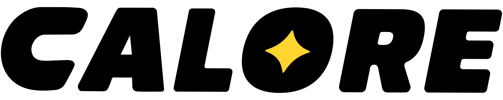

EnglishKetentuan penggunaan
Diperbarui 11 November 2026
Ketentuan ini adalah kesepakatan antara Anda dan Calore dalam menggunakan aplikasi. Dengan membuat akun, Anda menyetujuinya. Kalau ada yang kurang jelas, kirim email ke admin@caloreai.app.
Siapa yang boleh memakai Calore
Anda harus berusia 13 tahun atau lebih. Kalau Anda belum 18 tahun, gunakan Calore dengan persetujuan orang tua atau wali.
Akun Anda
- Daftar dengan alamat email yang bisa Anda buka. Kode masuk dikirim ke sana.
- Jaga kata sandi Anda. Anda bertanggung jawab atas apa yang terjadi di akun Anda.
- Beri tahu kami kalau Anda merasa orang lain masuk ke akun Anda.
Apa itu Calore, dan apa yang bukan
Calore memperkirakan kalori dan makro sebuah makanan dari foto, dan menghitung target harian dari data yang Anda isi. Keduanya adalah perkiraan. Foto tidak bisa memperlihatkan semua isi makanan, jadi hasil scan bisa keliru, dan Anda bisa memperbaiki porsinya.
Calore bukan nasihat medis. Calore tidak mendiagnosis, mengobati, atau mencegah penyakit apa pun, dan tidak menggantikan dokter atau ahli gizi. Bicarakan dulu dengan mereka sebelum mengubah pola makan kalau Anda sedang hamil, punya kondisi kesehatan tertentu, minum obat yang dipengaruhi makanan, atau pernah mengalami gangguan makan.
Yang Anda masukkan ke Calore
Foto, catatan makanan, dan catatan berat badan tetap milik Anda. Anda mengizinkan kami menyimpan dan memprosesnya supaya aplikasi bisa bekerja, seperti dijelaskan di kebijakan privasi. Data gizi yang dihitung untuk suatu hidangan masuk ke pustaka yang dipakai bersama oleh semua pengguna Calore. Pustaka itu berisi data makanan, bukan data orang.
Unggah hanya foto yang berhak Anda gunakan, dan jangan mengunggah apa pun yang melanggar hukum.
Nama pengguna dan teman
- Pilih nama dan nama pengguna milik Anda sendiri. Jangan menyamar sebagai orang lain, dan jangan memakainya untuk menghina atau mengganggu siapa pun.
- Jangan mengirim permintaan pertemanan untuk mengganggu orang. Anda bisa memblokir siapa saja, dan siapa saja bisa memblokir Anda.
- Untuk melaporkan sebuah nama atau seseorang, kirim email ke admin@caloreai.app. Kami dapat menghapus nama pengguna atau akun yang melanggar aturan ini.
Calore Premium
Calore bisa dipakai gratis. Calore Premium adalah langganan opsional.
- Anda membelinya lewat App Store atau Google Play, dengan harga yang ditampilkan sebelum Anda mengonfirmasi.
- Langganan diperpanjang otomatis di akhir setiap periode sampai Anda membatalkannya. Batalkan di pengaturan akun App Store atau Google Play paling lambat sehari sebelum tanggal perpanjangan.
- Uji coba gratis, kalau ada, berubah menjadi langganan berbayar saat berakhir, kecuali Anda membatalkannya sebelum itu.
- Pembayaran dan pengembalian dana ditangani oleh toko tempat Anda membeli, sesuai aturan toko tersebut.
Memakai Calore dengan wajar
Jangan mencoba merusak layanan, mengakali batasannya, melakukan scan dengan alat otomatis, atau menyalin datanya secara massal.
Berhenti, dan diminta berhenti
Anda bisa menghapus akun kapan saja. Caranya, dan apa saja yang dihapus, ada di halaman penghapusan akun. Kami dapat menangguhkan atau menutup akun yang melanggar ketentuan ini.
Tanggung jawab kami kepada Anda
Kami berusaha menjaga Calore tetap berjalan dan perkiraannya berguna, tetapi Calore disediakan apa adanya. Kami tidak bisa menjanjikan Calore selalu tersedia, atau setiap hasil scan selalu benar. Sejauh diizinkan hukum, kami tidak bertanggung jawab atas kerugian yang timbul karena mengandalkan sebuah perkiraan atau karena aplikasi tidak bisa diakses. Ketentuan ini tidak mengurangi hak yang diberikan hukum di tempat Anda tinggal.
Perubahan
Kalau ketentuan ini berubah secara berarti, kami akan memperbarui tanggal di atas dan memberi tahu Anda di aplikasi.